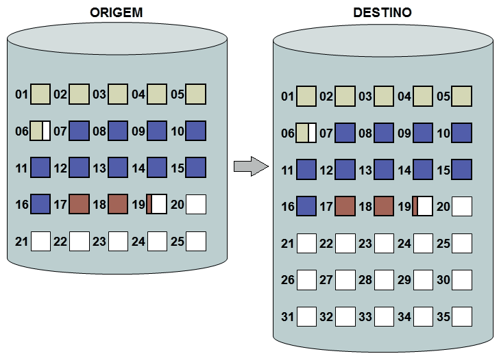
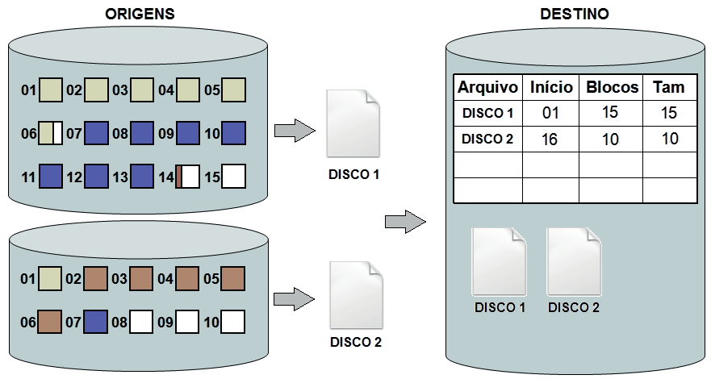
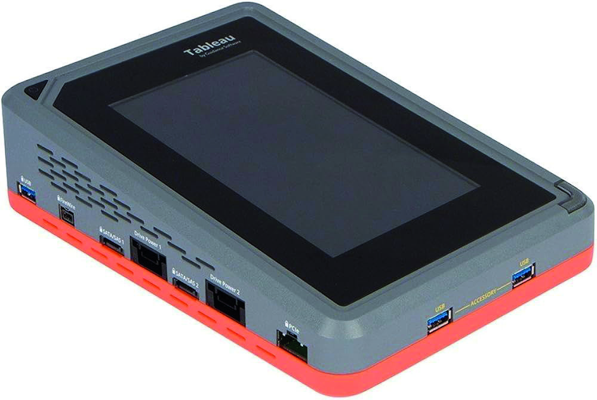
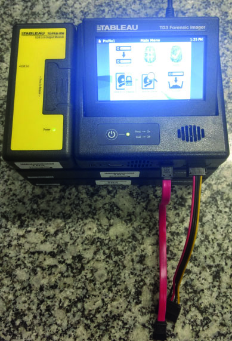
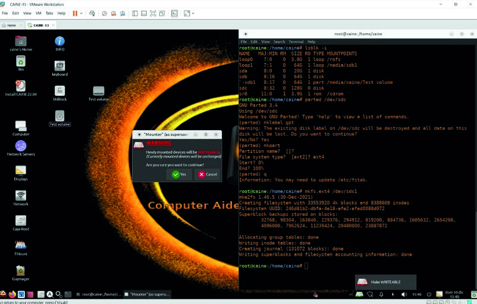

Após o procedimento de busca e apreensão, o próximo passo no processamento de um vestígio digital é a sua preservação. Ao contrário de outros tipos de vestígios, uma mídia de armazenamento computacional pode ser fielmente duplicada. Quando feita com os equipamentos e técnicas adequadas, essa cópia é idêntica à original, possuindo valor legal reconhecido. A duplicação forense de mídias é o nome dado ao procedimento de cópia integral dos dados contidos em uma mídia de armazenamento computacional para outra. Esse procedimento também é conhecido como “espelhamento” e, dentre as várias etapas de trabalho da perícia de informática, é um momento crítico e de suma importância. Antes de iniciar qualquer procedimento de duplicação, é necessário que as mídias envolvidas na operação sejam devidamente identificadas com etiquetas quanto à sua função, evitando qualquer dúvida posterior. Por convenção, a mídia a ser analisada (material original apreendido) é identificada como “origem” e a mídia que abrigará a cópia é identificada como “destino”. A mídia de destino deve ter capacidade igual ou superior à mídia de origem. Especialmente no caso de discos rígidos, há pequenas variações na capacidade nominal de diferentes fabricantes e modelos, sendo aconselhável sempre utilizar um disco rígido de destino com capacidade superior ao de origem. Uma vez realizada a duplicação forense, todas as etapas posteriores da análise pericial são realizadas sobre a cópia gerada. Assim, a mídia original só precisa ser lida uma única vez, permanecendo preservada e inalterada. Obviamente, o procedimento de duplicação forense não modifica nenhum bit da mídia original e a integridade da cópia pode ser verificada por meio do hash gerado ao final do procedimento. Vale destacar ainda que a duplicação forense é bem diferente de uma cópia lógica de dados, como um “copiar” e “colar” do Windows Explorer. A duplicação forense copia não apenas os dados “visíveis” em um sistema de arquivos (lembre-se do iceberg), mas também todas as outras informações presentes na mídia, como metadados e eventuais arquivos apagados. Assim, todo o conteúdo da mídia original é copiado: do primeiro ao último bit. No âmbito da Perícia de Informática da Polícia Federal, as atividades relacionadas à duplicação forense de mídias estão descritas no “MANUAL DE DUPLICAÇÃO FORENSE DE MÍDIAS DE ARMAZENAMENTO COMPUTACIONAIS”, publicado pelo Instituto Nacional de Criminalística.
Há duas maneiras de se realizar a duplicação forense: de mídia para mídia e de mídia para arquivo-imagem.
A duplicação forense do tipo mídia para mídia consiste na cópia completa dos dados da mídia de origem diretamente para a mídia de destino. Dessa forma, o primeiro bit da mídia original será idêntico ao primeiro bit da mídia de destino, e assim por diante. Esse tipo de duplicação é geralmente realizado quando é necessário utilizar a mídia de destino em substituição à original. Assim, é o procedimento indicado quando for necessário devolver ao investigado o conteúdo de um disco rígido apreendido, por exemplo. Nesse caso, a mídia original permanece com a perícia e a cópia gerada é enviada ao solicitante. A duplicação de mídia para mídia também pode ser utilizada para realizar determinados exames periciais, a critério do Perito Criminal. Pode ser necessário, por exemplo, inicializar o computador apreendido. Nesse caso, para evitar qualquer alteração nos dados, o disco rígido de origem é substituído pelo disco de destino. Assim, eventuais modificações ocasionadas durante a inicialização do sistema operacional, por exemplo, acontecerão na cópia, mantendo-se a mídia original inalterada. Sempre que a duplicação de mídia para mídia for realizada, a mídia de destino deve ser previamente “zerada”. Esse procedimento – conhecido também como zero fill ou wipe – consiste em gravar zeros em todo o conteúdo da mídia. Ele é necessário para garantir que dados presentes no disco antes da duplicação sejam totalmente apagados. Com isso, possíveis informações preexistentes serão efetivamente eliminadas e não se confundirão com as informações da mídia sendo copiada.

Figura 10 – Exemplo simplifi cado de uma duplicação de mídia para mídia
A duplicação forense do tipo mídia para arquivo-imagem consiste na cópia completa dos dados de uma mídia de origem para um ou mais arquivos gravados na mídia de destino. Dessa forma, o primeiro bit da mídia original será idêntico ao primeiro bit do arquivo gravado, e assim por diante. Nesse tipo de duplicação forense, todo o conteúdo da mídia original é armazenado em arquivos. Esses arquivos, por sua vez, são armazenados no sistema de arquivos da mídia de destino. Desde que possua capacidade de armazenamento suficiente, uma mídia de destino pode abrigar, sem riscos, a cópia de diversas mídias de origem. Devido à maior flexibilidade para se analisar diversos arquivos-imagem simultaneamente e à maior facilidade para se manter a integridade dos dados, a duplicação de mídia para arquivo-imagem é o método mais indicado para a realização de exames periciais. Nesse caso, não é necessário “zerar” a mídia de destino após cada duplicação, pois o conteúdo da mídia original estará restrito ao conteúdo dos arquivos gerados. Não há, portanto, risco de confusão com dados preexistentes na mídia.

Figura 11 – Exemplo simplifi cado de uma duplicação de mídia para arquivo-imagem
A duplicação forense pode ser feita por meio de equipamentos forenses especializados ou por meio de um computador comum. Ambos os métodos podem realizar a duplicação de mídia para mídia e a duplicação de mídia para arquivo-imagem, ficando a escolha a cargo do Perito Criminal.
Além da facilidade de uso e bom desempenho, uma grande vantagem de utilizar um equipamento especializado de duplicação é a garantia, quando corretamente utilizado, de que a mídia original não será alterada. Basicamente, as mídias (origem e destino) são conectadas em entradas específicas, as configurações são escolhidas e o processo de cópia é rapidamente iniciado. Como a utilização deste tipo de equipamento pressupõe o acesso direto à mídia original, ele é utilizado nos casos em que seja possível retirar a mídia de armazenamento do equipamento recebido para análise (o que ocorre na maioria dos casos). Ao final do processo, esses equipamentos emitem um relatório contendo a identificação das mídias (marcas, modelos e números de série), as informações do processo de cópia e o hash dos dados copiados. Os equipamentos à disposição do Perito Criminal, como o Tableau TD3, Tableau TX1 e Atola, possuem interface para praticamente todos os tipos de discos rígidos e possuem a capacidade de realizar duplicações simultâneas. Esses equipamentos podem ser facilmente levados para o campo e podem ser utilizados para a duplicação de discos rígidos durante uma busca, por exemplo.

Figura 12 – Exemplo de equipamento forense especializado: Tableau TX1

Figura 13 – Exemplo de equipamento forense especializado:
Tableau TD3 Forensic Imager
A duplicação utilizando um computador comum apresenta maior flexibilidade na escolha de interfaces e aplicativos. É especialmente útil para casos de discos rígidos que não foram reconhecidos pelos equipamentos especializados ou quando é necessário um procedimento especial, como tolerância a erros ou tratamento de setores defeituosos. De forma análoga à duplicação com equipamento especializado, esse tipo de procedimento é normalmente utilizado nos casos em que seja possível retirar a mídia do equipamento original e conectá-la ao computador que fará a duplicação. Entretanto, em alguns casos específicos, pode não ser possível ou conveniente remover a mídia original do equipamento onde ela está instalada. Alguns modelos de notebook, por exemplo, possuem mídias de armazenamento tão delicadas que sua remoção pode trazer riscos. Existem também mídias com interfaces ou configurações incomuns, que podem não funcionar fora do equipamento em que se encontram. Nesses casos, o próprio computador recebido para análise pode ser utilizado para o processo de cópia. O grande problema de utilizar um computador comum para a duplicação forense é o risco de se alterar acidentalmente os dados da mídia original. Por isso, recomenda-se a utilização de uma distribuição forense do sistema operacional Linux, especialmente projetada para não efetuar qualquer modificação nas mídias conectadas ao computador. Dentre as versões mais utilizadas pela perícia de informática, destacam-se o CAINE e o Kali. E, caso a mídia original possua algum tipo de proteção ou bloqueio contra escrita, o Perito Criminal pode realizar a duplicação utilizando o sistema operacional Windows em conjunto com algum software forense, como o FTK Imager. Além das mídias, naturalmente protegidas contra escrita, como CDs e DVDs do tipo somente leitura, o bloqueio de escrita pode ser obtido por meio de alguns métodos. Os principais são:
Dessa forma, em função das características da mídia recebida para duplicação e dos equipamentos disponíveis, o Perito Criminal deverá determinar qual conjunto de hardware e software será mais adequado para realizar o procedimento.

Figura 14 – Procedimento de criação da imagem de um disco na interface do CAINE